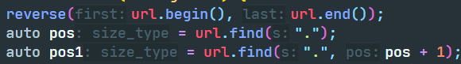
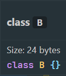
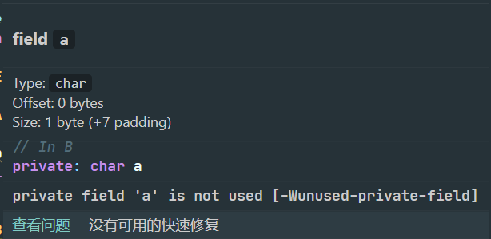

C++类对象的内存分布
写在前面
C++类初始化成一个对象之后，该对象实例在内存中是如何分布的呢？
C++类对象的内存分布是面试的热点话题，几次C++研发岗的面试十有八九面试官都会问到类对象的内存分布问题。于是乎我整理了一下这阵子关于类对象内存分布的笔记，整理成一篇博客供大家参考。
本文将类对象的内存分布分为种情况：空类情况，含成员变量，不含成员函数的情况，带成员函数的情况，带虚函数的情况。在讨论内存分布时，我们也将探讨C++中一个极为重要的原则，内存对齐原则。
空类情况
如果实例化一个空类，这个对象会在内存中占用1个字节（标识作用）。
1 | class Em {}; |
输出：
1 | 1 |
含成员变量，不含成员函数的情况
首先我们给出一个例子：
1 | class A { |
假设我们处在64位系统下，char占用1字节，int占用4字节，double占用8字节。上面代码的结果会是什么呢？看起来A与B都包含相同数量、相同类型的成员变量。
答案分别是：
1 | 16 |
通过这个例子我们便可以猜到C++的类实例内存分布与成员变量的声明顺序有关。
C++类成员变量的内存分布是：按照声明顺序，从上到下，按照内存对齐的原则进行分布的。
这里引出了我们马上要谈论的重要内容，内存对齐。
内存对齐
内存对齐的原则如下：
- 内存分配的顺序是按照声明的顺序。
- 每个变量相对于起始位置的偏移量（offset）必须是该变量类型大小的整数倍，不是整数倍则空出内存（padding），直到偏移量为整数倍为止。
- 最后整个类的大小必须是里面变量类型大小最大值的整数倍。
根据上面的原则，我们便可以分别推断A类和B类的大小。
A类的大小：
char a占1个字节，偏移值为0，目前A类占1字节。int b占4个字节，根据内存对齐原则的第二条，b起始位置的偏移量应该4的整数倍，所以b要在a后面空3个字节，然后放入，因此偏移值为4，目前为止A类占用8个字节（3个padding）。double c占8个字节，可以直接从b后的第一个字节开始放入，偏移值为8。此时A类占用16字节，符合内存对齐的第三条原则，整个类的大小（16）是成员变量类型大小最大值（8）的整数倍，因此不需要补齐。所以A类总共占用16字节。
同理，B类的大小：
char a占1个字节，偏移值为0，目前B类占1字节。double b占8个字节，根据第二条规则，b要在a后面空7个字节，然后开始放入，因此偏移值为8，目前为止B类占用16个字节（7个padding）。int c占4个字节，可以直接从b后的第一个字节开始放入，偏移值为16，此时B类占用20个字节。根据内存对齐的第三条原则，整个类的大小应该是成员变量类型大小最大值（8）的整数倍，因此需要补齐3个字节到24字节。所以B类总共占用24字节。
关于内存对齐的补充：
- 除了类，结构体也是这样的对齐规则。
- 对齐的原因：
- 平台原因：某些硬件平台只能在某些地址处取某些特定类型的数据，不能访问任意地址。
- 性能原因：访问未对齐的内存，处理器需要作两次内存访问；而对齐的内存访问仅需要一次访问
带成员函数的情况
还是先给个例子：
1 | class C { |
输出：
1 | 16 |
可以看到，C类所占用的内存空间大小与A类相同。因为一个对象所占的空间大小只取决于该对象的数据成员所占的空间，而与成员函数无关（虚函数后面讨论）。
用类取定义对象时，系统会为每一个对象分配储存空间。如果一个类包括了数据和函数，数据的内存分布如第二种情况所示，而函数是不占实例内存的，因为一个类的函数是公共的，一个类的函数只有一份。
带虚函数的情况
1 | class D { |
输出：
1 | 24 |
上面刚刚讨论过带成员函数的类实例内存空间，成员函数并不会占用类实例的内存空间，那为什么虚函数还会占用类实例内存空间呢？答案与C++的运行时多态（虚函数）的实现有关。
在类含有虚函数时，为了实现基类继承类之间虚函数的准确调用，使用了一个虚函数表来记录类实例的虚函数的实际地址，而该虚函数表并不位于类实例的内存空间中。相反的，在每个含有虚函数的类的内存空间首部，都会有一个虚函数表指针（vptr），指向对应的虚函数表。
假设我们处于64位系统下，指针占用8个字节，那么很容易便能推出类D的内存空间：
vptr占8个字节，偏移值为0，目前D类占8字节char a占1个字节，偏移值为8，目前D类占9字节int b占4个字节，根据内存对齐原则的第二条，b起始位置的偏移量应该4的整数倍，所以b要在a后面空3个字节，然后放入，因此偏移值为12，目前为止D类占用16个字节（3个padding）。double c占8个字节，可以直接从b后的第一个字节开始放入，偏移值为16。此时D类占用24字节，符合内存对齐的第三条原则，整个类的大小（24）是成员变量类型大小最大值（8）的整数倍，因此不需要补齐。所以D类总共占用16字节。
写在最后，推荐一个VS Code插件
VS Code扩展市场里官方的C/CPP插件真心不好用，还容易造成卡顿。可以关闭C/CPP插件的语法检查功能，安装LLVM在扩展市场里提供的clangd插件。
clangd插件与官方的C/CPP插件相比，自动补全速度稍慢一些，但是提示信息更加丰富，目前clangd插件也已经能搭配最新的clangd14用上inlay hints功能。

当然，在这篇文章种特别推荐clangd插件，还是因为它对查看类内存布局的支持：


简直不要太便利！